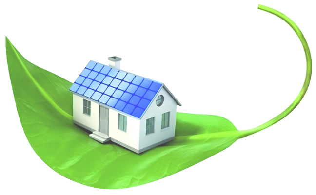

DİJİTAL SHOWROOM
Bir yapıyı yalnızca uygulamalarla yenilemiyoruz. Isıdan suya, çatıdan cepheye kadar yapının bütününü düşünüyor; görünümünü, konforunu ve değerini birlikte ele alıyoruz.

Dış cephe ve mantolama yalnızca binanın görünüşü değildir. Yapının ısı performansı, konforu ve dış etkilere karşı korunması birlikte düşünülür.
Yapının suyla temas eden noktaları doğru çözülmediğinde sorun büyür. Temel, teras, balkon, çatı ve drenaj uygulamalarını yapının ihtiyacına göre ele alıyoruz.
Temel, teras, balkon, çatı ve suya maruz kalan yapı elemanlarına yönelik çözümler.
Yapı çevresinde ve temelde suyun kontrollü şekilde uzaklaştırılması.
Su, nem ve ısı etkilerine karşı çatı sistemlerinin korunması.
Bir çatının görevi yalnızca üstü kapatmak değildir. Su, nem, ısı ve yapı bütünlüğü birlikte düşünülmelidir.


Cephe tasarımı, renk, doku ve uygulama detayları bir araya geldiğinde yapı kendini yeniden ifade eder.
3D renklendirme ve cephe tasarımı ile uygulama öncesinde yapının yeni görünümünü dijital ortamda değerlendirme imkânı.
8 Yapı'nın yaklaşımı tek bir uygulamaya sıkışmaz. Yapının tamamını ilgilendiren farklı ihtiyaçlar için çözüm alanlarını birlikte değerlendiriyoruz.
Yapının estetik detaylarını tamamlayan yüzey uygulamaları.
Yapının dış kabuğunda performans ve görünümü birlikte düşünmek.
Yapının çevresiyle kurduğu ilişkiyi tamamlayan çözümler.
Yapının ihtiyaçlarına göre değerlendirilen modern uygulama çözümleri.
Teknoloji, uygulamadan önce doğru karar vermeyi kolaylaştırabilir. 8 Yapı'da yapının durumunu daha görünür hale getiren dijital araçlardan yararlanıyoruz.
Yapıdaki ısı kaçaklarının ve farklı sıcaklık bölgelerinin tespit edilmesine yardımcı olan görüntüleme yaklaşımı.
Uygulama sonrasında yapının nasıl görünebileceğini dijital ortamda değerlendirme imkânı.

“Bir yapıya sadece iş olarak değil, çevresiyle birlikte düşünülmesi gereken bir değer olarak bakıyoruz.”